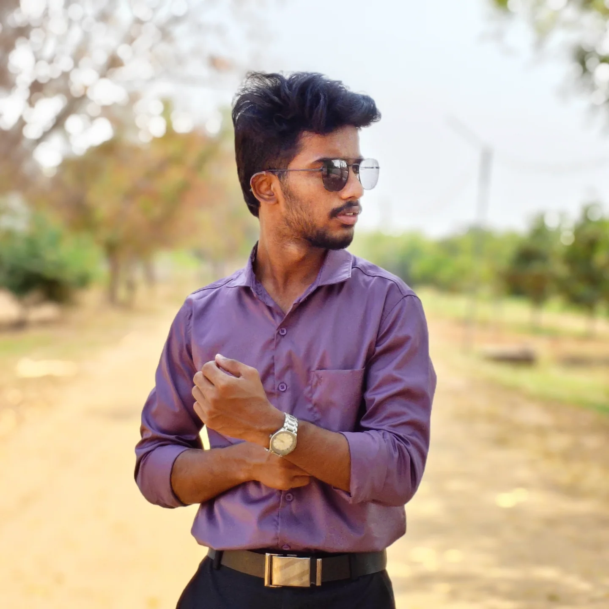

JASWANTH
KAMARAJ J
B.Tech Student • AI & DS
📸 Photographer • 🎬 Editor
@jaswanth._.07_
ABOUT ME
I am Jaswanth Kamaraj J, a B.Tech student specializing in Artificial Intelligence and Data Science (AI & DS), with a strong interest in technology and creative media.
Alongside my academic journey, I am passionate about photography, photo editing, and video editing. I enjoy transforming ideas into engaging visual content and continuously exploring new creative techniques.
I am also interested in Artificial Intelligence, programming, and web development.
INTERESTS
Artificial Intelligence & Data Science
Exploring AI, machine learning, data analysis, programming and emerging technologies.
Photography
Capturing moments, creative compositions and meaningful stories.
Photo & Video Editing
Creating visual content through photo manipulation, colour grading and video editing.
Web Development
Creating modern and responsive websites.